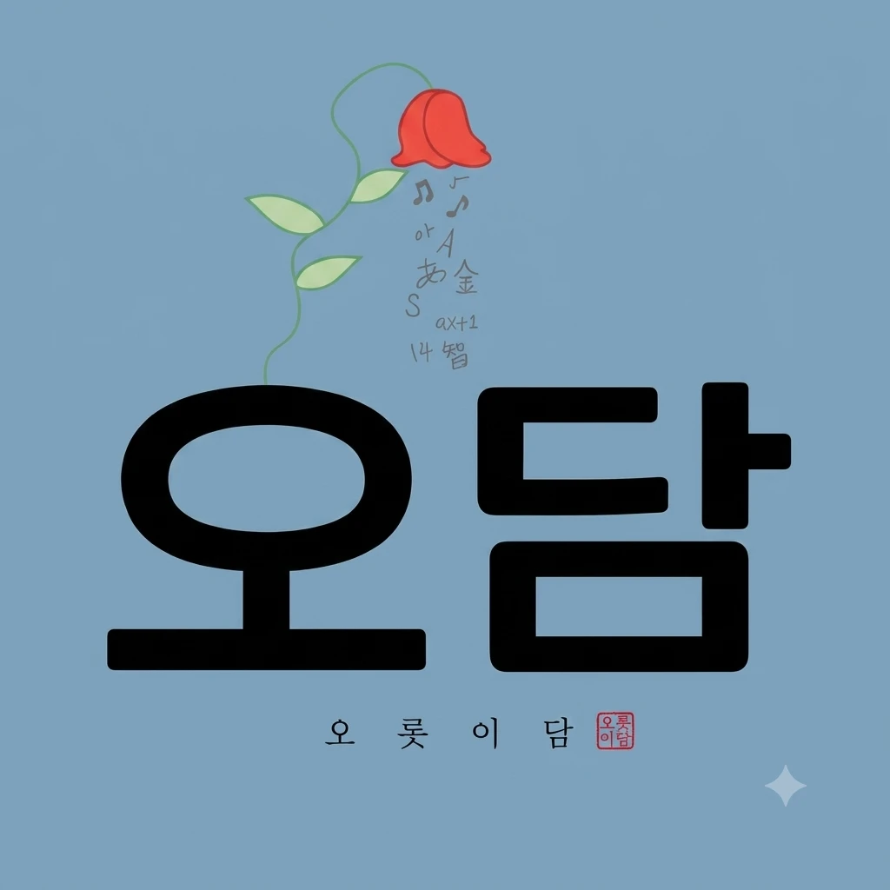

대한민국 가구를 소득 기준 상·중·하로 나눠 계층 비율의 변화를 보고, 내 소득으로 받을 수 있는 지원 제도와 청년 취업 지원 제도를 찾아봅니다.
월 소득을 소득인정액처럼 단순 비교한 예상 결과입니다. 실제 심사는 재산, 소득 공제, 부양 관계를 반영하고 신청 후 시·군·구 조사로 정해집니다. 각 제도를 눌러 세부 내용을 읽고, 이해가 안 되는 부분은 질문하세요.
나이·상태·가구 소득만으로 따져 본 예상 결과입니다. 재산, 병역 기간에 따른 나이 연장, 모집 차수별 조건은 반영하지 않았습니다. 금액은 2026년 안내 자료 기준이며 신청 전 고용24나 고용센터에서 공고를 확인하세요.
부산시 사업은 정해진 기간에 인원을 뽑는 경우가 많아 조건에 맞아도 지금 신청할 수 없을 수 있습니다. 구·군이 따로 하는 출산축하금 같은 사업은 아직 넣지 않았습니다. 2026년 공고와 보도 기준이며 신청 전 부산시 누리집이나 120바로콜센터(051-120)에서 확인하세요.